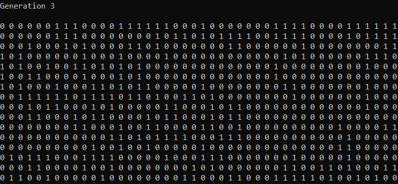

Conway's Game of Life is a simulation of cellular reproduction. This is a simplified version of the game,
created in C# as a console application. The simulation takes place in a two dimensional grid.
It uses ones and zeroes to represent living and dead cells. Cells live and die in each generation
based off of a set of rules relating to the states of each cell's neighbours.

GitHub Link